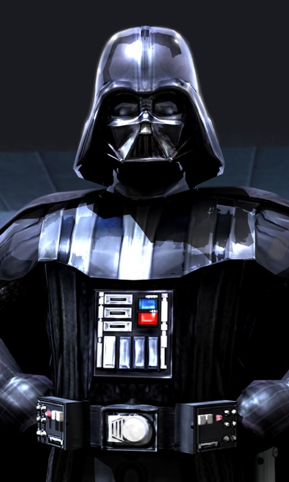

A lil' about me
 Following a brutal battle with Obi-Wan Kenobi on Mustafar that nearly killed him, Vader is restored under the watchful eye of his new Master, Darth Sidious. Despairing over the loss of his wife, Vader becomes fully consumed by the dark side of the Force.
Once a heroic Jedi Knight, Darth Vader was seduced by the dark side of the Force, became a Sith Lord, and led the Empire’s eradication of the Jedi Order. He remained in service of the Emperor -- the evil Darth Sidious -- for decades, enforcing his Master’s will and seeking to crush the fledgling Rebel Alliance.
 Before he became a disciple of the dark side, Darth Vader was Anakin Skywalker, a goodhearted Jedi and hero of the Clone Wars. While he was considered one of the most powerful Jedi in the galaxy, Anakin had broken the Order’s code by secretly marrying Senator Padmé Amidala. When he began to suffer visions that Padmé would die in childbirth, Anakin sought a way to prevent this fate. Supreme Chancellor Palpatine, a mentor to the young Jedi, claimed that the dark side was a pathway to this ability: he could stop people from dying with Sith power. At the same time, the Chancellor revealed that he himself was a Sith Lord, Darth Sidious, and would train Anakin. Confused and conflicted, Anakin ultimately succumbed to Sidious’ temptations. Rechristened as Darth Vader, he became an agent of evil.
Before he became a disciple of the dark side, Darth Vader was Anakin Skywalker, a goodhearted Jedi and hero of the Clone Wars. While he was considered one of the most powerful Jedi in the galaxy, Anakin had broken the Order’s code by secretly marrying Senator Padmé Amidala. When he began to suffer visions that Padmé would die in childbirth, Anakin sought a way to prevent this fate. Supreme Chancellor Palpatine, a mentor to the young Jedi, claimed that the dark side was a pathway to this ability: he could stop people from dying with Sith power. At the same time, the Chancellor revealed that he himself was a Sith Lord, Darth Sidious, and would train Anakin. Confused and conflicted, Anakin ultimately succumbed to Sidious’ temptations. Rechristened as Darth Vader, he became an agent of evil.
Sidious assumed the mantle of Emperor, and Vader helped the Empire destroy the Jedi Order; without mercy, Anakin led a legion of clones into the Jedi Temple, and personally killed both fully trained Jedi and novice younglings alike. On the lava planet Mustafar, where he had been sent to assassinate Separatist leaders, Vader battled his former Master and friend, Obi-Wan Kenobi. Anakin fought with an aggressive ferocity, ignoring Obi-Wan's pleas to come to his senses. Ultimately, the Jedi Master bested the new Sith. Vader was left severely injured and burned on the banks of a lava river, filled with anger and hate. He was found by the Emperor and encased in frightening black armor that kept him alive, and given mechanical lungs that emitted an ominous breathing sound with his every step. Anakin Skywalker was no more.
 Vader quickly became a highly visible symbol of the Empire, serving as Palpatine’s fearsome enforcer. He hunted down fugitive Jedi who had escaped Order 66, as well as ferreting out enemies both within and without. Vader’s sudden arrival within the Imperial hierarchy gave rise to many rumors. Some high-ranking Imperials claimed he was a laboratory creation built to mimic the fallen Separatist warlord General Grievous, while others whispered that he was a technologically augmented warrior schooled in the now-forbidden arts of the Force. Only a few guessed the truth – that Vader was the reborn Jedi Anakin Skywalker.
Vader sent agents such as the Inquisitor to find not just escaped Jedi but also new Force-sensitive beings that might pose a threat to the Empire. And on Palpatine’s orders, he worked with the ambitious, ruthless Grand Moff Tarkin to supervise construction of the Death Star and stamp out resistance to Imperial rule.
Vader quickly became a highly visible symbol of the Empire, serving as Palpatine’s fearsome enforcer. He hunted down fugitive Jedi who had escaped Order 66, as well as ferreting out enemies both within and without. Vader’s sudden arrival within the Imperial hierarchy gave rise to many rumors. Some high-ranking Imperials claimed he was a laboratory creation built to mimic the fallen Separatist warlord General Grievous, while others whispered that he was a technologically augmented warrior schooled in the now-forbidden arts of the Force. Only a few guessed the truth – that Vader was the reborn Jedi Anakin Skywalker.
Vader sent agents such as the Inquisitor to find not just escaped Jedi but also new Force-sensitive beings that might pose a threat to the Empire. And on Palpatine’s orders, he worked with the ambitious, ruthless Grand Moff Tarkin to supervise construction of the Death Star and stamp out resistance to Imperial rule.
 After the Grand Inquisitor's death, Vader became a more active participant in the hunt for the Lothal rebels and their Jedi. He set a trap for the freedom fighters and easily bested Kanan Jarrus and Ezra Bridger in lightsaber combat, though the Jedi survived the encounter. Vader also single-handedly wiped out most of Phoenix Squadron, but it was during this battle that he made a startling discovery: Ahsoka Tano lived.
Vader later tracked Tano and the rebels to the Sith Temple on Malachor, and found Bridger there, alone. He quickly defeated the young Padawan, destroying his lightsaber and ready to deliver a killing blow. But he was interrupted by the former pupil of Anakin Skywalker, Ahsoka Tano. Vader offered mercy if she would lead him to any survivng Jedi, but Tano refused; in return, the Sith Lord threatened to torture Bridger for the information. Tano now saw that her Master was truly dead, and the two dueled. She held her own and struck Vader in the mask, severing the face plate. Upon seeing her former Master, Ahsoka called him "Anakin," saying she would not leave him. "Then you will die," Vader replied. Tano Force pushed her Jedi friends clear of the Temple, and clashed with Vader once more as the ancient building collapsed around them. Following the duel, Vader limped back to his ship.
After the Grand Inquisitor's death, Vader became a more active participant in the hunt for the Lothal rebels and their Jedi. He set a trap for the freedom fighters and easily bested Kanan Jarrus and Ezra Bridger in lightsaber combat, though the Jedi survived the encounter. Vader also single-handedly wiped out most of Phoenix Squadron, but it was during this battle that he made a startling discovery: Ahsoka Tano lived.
Vader later tracked Tano and the rebels to the Sith Temple on Malachor, and found Bridger there, alone. He quickly defeated the young Padawan, destroying his lightsaber and ready to deliver a killing blow. But he was interrupted by the former pupil of Anakin Skywalker, Ahsoka Tano. Vader offered mercy if she would lead him to any survivng Jedi, but Tano refused; in return, the Sith Lord threatened to torture Bridger for the information. Tano now saw that her Master was truly dead, and the two dueled. She held her own and struck Vader in the mask, severing the face plate. Upon seeing her former Master, Ahsoka called him "Anakin," saying she would not leave him. "Then you will die," Vader replied. Tano Force pushed her Jedi friends clear of the Temple, and clashed with Vader once more as the ancient building collapsed around them. Following the duel, Vader limped back to his ship.
 Surprisingly, Darth Vader constructed his own castle, a testament to his might, at the site of his greatest defeat: the fiery lava-world, Mustafar. The location and design of the castle came as much from the dark side as it did from Vader's personal history, however; the complex sits atop an ancient Sith cave, and the tuning towers serve as a conduit for the dark side of the Force. Vader would rest in his castle, often in solitary meditation or alone in a bacta tank, awaiting orders from his Master. Once the Death Star was complete and tested on Jedha, he summoned Director Orson Krennic, instructing the Imperial that the superweapon was to remain a covert tool of destruction. Only when the time was right would its existence be revealed to the galaxy.
Surprisingly, Darth Vader constructed his own castle, a testament to his might, at the site of his greatest defeat: the fiery lava-world, Mustafar. The location and design of the castle came as much from the dark side as it did from Vader's personal history, however; the complex sits atop an ancient Sith cave, and the tuning towers serve as a conduit for the dark side of the Force. Vader would rest in his castle, often in solitary meditation or alone in a bacta tank, awaiting orders from his Master. Once the Death Star was complete and tested on Jedha, he summoned Director Orson Krennic, instructing the Imperial that the superweapon was to remain a covert tool of destruction. Only when the time was right would its existence be revealed to the galaxy.
 When the plans for the Death Star were stolen, Vader would take action to clean up Krennic's mess, personally slaughtering a squad of rebel soldiers and leading the hunt for the data tapes.
When the plans for the Death Star were stolen, Vader would take action to clean up Krennic's mess, personally slaughtering a squad of rebel soldiers and leading the hunt for the data tapes.
 Nineteen years after his battle with Obi-Wan Kenobi, Darth Vader remained the Empire’s tyrannical hand. Upon the Rebel Alliance’s theft of schematics for the Empire’s ultimate weapon, the planet-sized Death Star, Vader led an attack on a suspected Rebel vessel, seeking to recover the stolen plans and find the location of the Rebel base. Meanwhile, Rebel leader Princess Leia hid the data tapes -- and a distress message -- inside the droid R2-D2, sending him to Tatooine in search of Obi-Wan Kenobi. Vader and his stormtroopers killed all aboard with the exception of the Princess, opting to take her to the Death Star for interrogation. Leia proved able to resist a mind probe, and Obi-Wan Kenobi, having received Artoo’s message, soon arrived with the astromech, Luke Skywalker, Han Solo, Chewbacca, and C-3PO. Vader and Obi-Wan clashed one last time, with the Sith Lord striking down his former Master. Luke, Leia, and the heroes were able to escape, but only because the Empire allowed it: Vader had placed a tracking device on their ship, which led the Empire to the Rebel’s secret base. As the Death Star closed in, the Rebels mounted an attack, with Vader himself entering the fray in his TIE Advanced starfighter. Streaming through the Death Star trench and about to finish off the last of the Rebels -- Luke Skywalker in his X-wing -- Vader and his wingmen were attacked from behind by the Millennium Falcon. Ricocheted away from the Death Star and spun out of control, Vader was unable to stop Luke. The space station was destroyed, but Vader survived, and he flew into the far reaches of space.
Nineteen years after his battle with Obi-Wan Kenobi, Darth Vader remained the Empire’s tyrannical hand. Upon the Rebel Alliance’s theft of schematics for the Empire’s ultimate weapon, the planet-sized Death Star, Vader led an attack on a suspected Rebel vessel, seeking to recover the stolen plans and find the location of the Rebel base. Meanwhile, Rebel leader Princess Leia hid the data tapes -- and a distress message -- inside the droid R2-D2, sending him to Tatooine in search of Obi-Wan Kenobi. Vader and his stormtroopers killed all aboard with the exception of the Princess, opting to take her to the Death Star for interrogation. Leia proved able to resist a mind probe, and Obi-Wan Kenobi, having received Artoo’s message, soon arrived with the astromech, Luke Skywalker, Han Solo, Chewbacca, and C-3PO. Vader and Obi-Wan clashed one last time, with the Sith Lord striking down his former Master. Luke, Leia, and the heroes were able to escape, but only because the Empire allowed it: Vader had placed a tracking device on their ship, which led the Empire to the Rebel’s secret base. As the Death Star closed in, the Rebels mounted an attack, with Vader himself entering the fray in his TIE Advanced starfighter. Streaming through the Death Star trench and about to finish off the last of the Rebels -- Luke Skywalker in his X-wing -- Vader and his wingmen were attacked from behind by the Millennium Falcon. Ricocheted away from the Death Star and spun out of control, Vader was unable to stop Luke. The space station was destroyed, but Vader survived, and he flew into the far reaches of space.
 After the destruction of the Death Star, Darth Vader became obsessed with finding Luke Skywalker. He had dispatched probe droids across the galaxy, finally locating the Rebel base on the remote ice planet Hoth. Upon his arrival the Rebels had already escaped, but he pursued Luke’s friends with relentless fervor. With the Empire unable to secure the Millennium Falcon, Vader hired bounty hunters to track down the starship, and the deadly Boba Fett eventually set a trap for the heroes on Cloud City. Believing they had found sanctuary, Han, Leia, and company actually found Vader and the Empire waiting. Vader tortured Han in an effort to lure Luke to Bespin, and later had Solo frozen in carbonite. Finally, Luke, who had cut his Jedi training short to save his friends, arrived and dueled with Vader. The Sith Lord proved too powerful; he brutalized Luke with flying debris, and eventually severed his right hand with his lightsaber. Seeking to bring Luke to the dark side, Vader revealed that he was Luke’s father -- a shock that rattled the young Jedi to the core. Rather than join Vader, Luke chose to fall into a deep abyss, and survived.
After the destruction of the Death Star, Darth Vader became obsessed with finding Luke Skywalker. He had dispatched probe droids across the galaxy, finally locating the Rebel base on the remote ice planet Hoth. Upon his arrival the Rebels had already escaped, but he pursued Luke’s friends with relentless fervor. With the Empire unable to secure the Millennium Falcon, Vader hired bounty hunters to track down the starship, and the deadly Boba Fett eventually set a trap for the heroes on Cloud City. Believing they had found sanctuary, Han, Leia, and company actually found Vader and the Empire waiting. Vader tortured Han in an effort to lure Luke to Bespin, and later had Solo frozen in carbonite. Finally, Luke, who had cut his Jedi training short to save his friends, arrived and dueled with Vader. The Sith Lord proved too powerful; he brutalized Luke with flying debris, and eventually severed his right hand with his lightsaber. Seeking to bring Luke to the dark side, Vader revealed that he was Luke’s father -- a shock that rattled the young Jedi to the core. Rather than join Vader, Luke chose to fall into a deep abyss, and survived.
 With the Empire looking to crush the Rebel Alliance once and for all, construction of a second Death Star commenced. Darth Vader and the Emperor were personally overseeing its completion, though Vader’s Master had another plan: to lure Luke Skywalker to the dark side of the Force. Vader and the Emperor waited for Luke to come to them, which he did; the young Jedi believed there was still good in his father, and tried to turn him back to the light side. Vader was conflicted, but still brought Luke before the Dark Lord. The Emperor taunted and tempted Luke, leading to a final duel between Vader and his son. Giving in to his hate, Luke overpowered Vader, cutting off his hand and was poised to deliver the killing blow. The Emperor commanded that Luke finish his father and join the dark side, but the young Jedi refused, opting instead to throw away his lightsaber. Enraged at this denial, the Emperor shot Force lightning into Luke, torturing him. Vader rose, the good in him awakened by his son’s compassion, and destroyed the Emperor. While he had suffered fatal injuries from the Emperor’s lightning, Vader’s redeeming final act restored his consciousness to Anakin Skywalker, and he had one last moment with Luke before peacefully accepting his death.
With the Empire looking to crush the Rebel Alliance once and for all, construction of a second Death Star commenced. Darth Vader and the Emperor were personally overseeing its completion, though Vader’s Master had another plan: to lure Luke Skywalker to the dark side of the Force. Vader and the Emperor waited for Luke to come to them, which he did; the young Jedi believed there was still good in his father, and tried to turn him back to the light side. Vader was conflicted, but still brought Luke before the Dark Lord. The Emperor taunted and tempted Luke, leading to a final duel between Vader and his son. Giving in to his hate, Luke overpowered Vader, cutting off his hand and was poised to deliver the killing blow. The Emperor commanded that Luke finish his father and join the dark side, but the young Jedi refused, opting instead to throw away his lightsaber. Enraged at this denial, the Emperor shot Force lightning into Luke, torturing him. Vader rose, the good in him awakened by his son’s compassion, and destroyed the Emperor. While he had suffered fatal injuries from the Emperor’s lightning, Vader’s redeeming final act restored his consciousness to Anakin Skywalker, and he had one last moment with Luke before peacefully accepting his death.
 The very next day he schocked everyone by him being alive Luke got stunned seeing his father back and now they both live peacefully
The very next day he schocked everyone by him being alive Luke got stunned seeing his father back and now they both live peacefully
 Then again the very next day emperor papatine sended an empire mail to his apprentice Darth Vader regarding some reunion, Vader was very happy to see this he slapped Luke skywalker in his face said him that he is a coward and left for reunion with some of his fellow stormtroopers.
Then again the very next day emperor papatine sended an empire mail to his apprentice Darth Vader regarding some reunion, Vader was very happy to see this he slapped Luke skywalker in his face said him that he is a coward and left for reunion with some of his fellow stormtroopers.
 Lord Vader noticed Darth Maul , Count Dooku , General Grievous and many other sith lords and imperial forces gathered all together , he also noticed that the reunion also consisited of rebels , bounty hunters , mecenaries , old republic and aliens from many oyher planets
Lord Vader noticed Darth Maul , Count Dooku , General Grievous and many other sith lords and imperial forces gathered all together , he also noticed that the reunion also consisited of rebels , bounty hunters , mecenaries , old republic and aliens from many oyher planets
 Now Darth Vader usually spends time with boba fett killing people and throwing parties , Boba and Darth vader are now great friends . They now own a mercenary squad including stormtroopers , greedo , and many others they also team up with Lando sometimes to do extra dirty stuff.
Now Darth Vader usually spends time with boba fett killing people and throwing parties , Boba and Darth vader are now great friends . They now own a mercenary squad including stormtroopers , greedo , and many others they also team up with Lando sometimes to do extra dirty stuff.